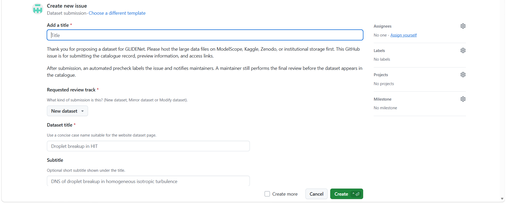

Contribute
GLIDENet welcomes gas-liquid two-phase CFD and ML dataset contributions. Contributors host large files externally and submit catalogue metadata for automated precheck and maintainer review.
How to Contribute
- Package the dataset with clear metadata and at least one readable sample.
- Upload large files to ModelScope, Kaggle, Zenodo, or institutional storage.
- Submit a GitHub issue using the dataset submission form.
- Automation generates a JSON record and draft pull request.
- Maintainers review metadata, access, license, citation, and practical readability.
Open a Dataset Submission Issue

Standards for GLIDENet
The catalogue does not force a single data format. It requires clear meaning: variables, units, array shapes, grid, coordinate order, field location, phase convention, file paths, license, citation, and limitations must be unambiguous.
- Use `info.json` for scientific metadata.
- Place actual field data under `data/` or document a clear equivalent structure.
- Include `load_example.py` for custom binary or solver-native files.
- State whether fields are cell-centered or node-centered.
- State interface convention, for example whether `alpha = 1` means liquid or gas.
Metadata Format
`info.json` should contain a global section for dataset-level information and a local section for case, sample, or snapshot-level file paths.
{
"schema_version": "0.1.0",
"dataset_type": "gas_liquid_two_phase_cfd",
"global": {
"dataset_id": "owner/dataset-slug",
"title": "Dataset title",
"description": "Short dataset description.",
"format": "custom binary",
"variables": ["alpha", "u", "v", "w", "p"],
"grid": {},
"physics": {},
"contributors": [],
"license": "CC-BY-4.0",
"doi": "",
"known_limitations": []
},
"local": [
{
"snapshot_id": "000001",
"time": {"value": null, "units": ""},
"files": {}
}
]
}Authors and Contributors
Each dataset record should include contributors, contact, related publication or DOI when available, and a preferred citation. Maintainers review catalogue readiness but do not replace scientific peer review.
Funding
Funding and acknowledgement information for GLIDENet will be added as the project develops.